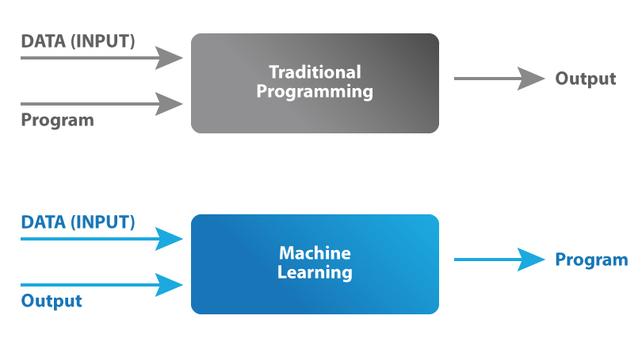

A practical introduction to deep learning
The rise of deep learning: why?

AlexNet: the mother of all networks


A simple formal definition of neural network
- \( g_{_{W}}:\mathbb{R}^{n} \to \mathbb{R}^{m} \)
- \( W \to \) neural network parameters (Weights)
- \( g_{_{W}} \to \) differentiable everywhere
Mnist: hand written digits
A classification problem

\( g_{_{W}}:\mathbb{R}^{n} \times \mathbb{R}^{n} \to [0,1]^{m} \)
\( n = 28 \, (pixels) \)
\( m = 10 \, (classes) \)
Pixel by pixel processing
A semantic segmentation problem
\( g_{_{W}}:\mathbb{R}^{n} \times \mathbb{R}^{n} \to \mathbb{R}^{n} \times \mathbb{R}^{n} \)
Fully connected neural networks
aka multilayer perceptron
Multilayer perceptron components
- Input: \( x \in \mathbb{R}^{25} \)
- Output: \( y \in \mathbb{R}^{10} \)
- Weights: \( W = (w_{jk}) \)
- Activation functions: \( f \)
Fully connected neural networks: forward propagation
\( z_{1} = W^{1} x \)
\( a_{1} = f^{1}(z_{1}) \)
\( \Downarrow \)
\( z_{l} = W^{l} a_{l-1} \)
\( a_{l} = f^{l}(z_{l}) \)
\( \Downarrow \)
\( y = f^{L}(z_{L}) \)
Activation functions


Sigmoid \[ f(x)=\frac{1}{1 + e^{-x}} \]
Tanh \[ f(x)=\frac{e^{x}-e^{-x}}{e^{x} + e^{-x}} \]
ReLU\[ f(x)=max\{0,x\} \]
Leaky ReLU\[ f(x)=f(x)=max\{0.01x,x\} \]
Softplus \[ f(x)=ln(1 + e^{x}) \]
Problems of a fully connected neural network
- Does not respect positional correlation for an image
- It is not sparse
- Scales poorly for large inputs
Convolutional neural networks

Examples of convolutions


- A convolution window (also called filter) moves across the input and produces and output with element by element multiplication
- The weights \( W \) are the parameters of the filter (9 in this case). The convolution is defined by a size (3x3) and a stride (1x1)
- Multiple filters can be used over a single input
- The input can be padded in different ways and for different reasons (for instance to preserve the input dimensions)
An example of pooling layers: max-pooling

Credits to: https://mlnotebook.github.io/
Convolutional neural networks
An interactive live demo of a ConvNet
https://www.cs.ryerson.ca/~aharley/vis/conv/The machine learning paradigm shift
Supervised learning: mnist
The dataset consists of input data (images) and output data (labels). When trained on a large amount of hand labeled data the network can learn to correctly classify previously unseen images. A well trained neural network outputs correct labels.
Loss function
\[ Loss = \mathcal{L}(g_{_{W}}(x),y) \]
\[\mathcal{L}(g_{_{W}}(x),y) = \sum _{i}^{data} \lvert \lvert g_{_{W}}(x_{i}) - y_{i} \rvert \rvert_{1} \]
\[\mathcal{L}(g_{_{W}}(x),y) = \sum _{i}^{data} \lvert \lvert g_{_{W}}(x_{i}) - y_{i} \rvert \rvert_{2} \]
\[\mathcal{L}(g_{_{W}}(x),y) = \sum _{i}^{data} CE(g_{_{W}}(x_{i}) - y_{i}) \]
Minimizing the loss function
Gradient descent

- \( W_{0}, \mathcal{L}(g_{_{W_{0}}}(x),y)\)
- \( \nabla \mathcal{L}(g_{_{W_{0}}}(x),y)\)
- \( W_{1} = W_{0} - \gamma \nabla \mathcal{L}(g_{_{W_{0}}}(x),y) \)
- \( W_{n+1} = W_{n} - \gamma \nabla \mathcal{L}(g_{_{W_{n}}}(x),y) \)
...
\( \gamma = learning \, rate \)
Minimizing faster: batch gradient descent
\[ \mathcal{L}_{batch} = \sum _{i}^{n_{batch}} (g_{_{W_{0}}}(x_{i}),y_{i})\]
\[ n_{batch} = 32 \, (64, 128) \]
- \( W_{0}, \mathcal{L}_{batch}(g_{_{W_{0}}}(x),y)\)
- \( \nabla \mathcal{L}(_{batch}g_{_{W_{0}}}(x),y)\)
- \( W_{1} = W_{0} - \gamma \nabla \mathcal{L}_{batch}(g_{_{W_{0}}}(x),y) \)
- \( W_{n+1} = W_{n} - \gamma \nabla \mathcal{L}_{batch}(g_{_{W_{n}}}(x),y) \)
...
\( \gamma = learning \, rate \)
How to compute the gradient?
Backpropagation, or the chain rule

Training a network in practice
The Network
\[ \mathcal{L}(g_{_{W}}(x),y) \]
The Data: Training Set
The Data: Validation Set
Is It working?
Epoch \( \Rightarrow \) One full pass through the whole training set
Deep learning for Raman Spectroscopy
The state of the art
Deep learning for Raman Spectroscopy: the data
The RUFF dataset consists of more than 1600 different classes of spectra, with an uneven number of spectra for each class
The dataset was split in training and validation set leaving just one sample spectrum per class in the validation set
Deep learning for Raman Spectroscopy: the network
The network is a one-dimensional convolutional neural network that takes a Raman spectrum as an input and outputs a chemical compound class as an output
Deep learning for Raman Spectroscopy: the performance
Our approach to Raman and Deep Learning: the data
Our dataset consists of 1322 different classes of preprocessed spectra, with 12 to 20 spectral samples for each class. One third of the data is assigned to the validation dataset.
Data augmentation

Original
Noise
Baseline
Magnitude Warping
Energy Warping
All Augmentations
Our approach to Raman and Deep Learning: the network
Our approach to Raman and Deep Learning: the results
96% accuracy on the validation set
Transitioning to our data: transfer learning
Retraining is always boring, and requires a GPU!!!
A completely different approach
Self-supervised learning
No retraining and potentially no need for supervision!!!
Let's try it ourselves
Python + Keras + ColaboratoryWrapping up